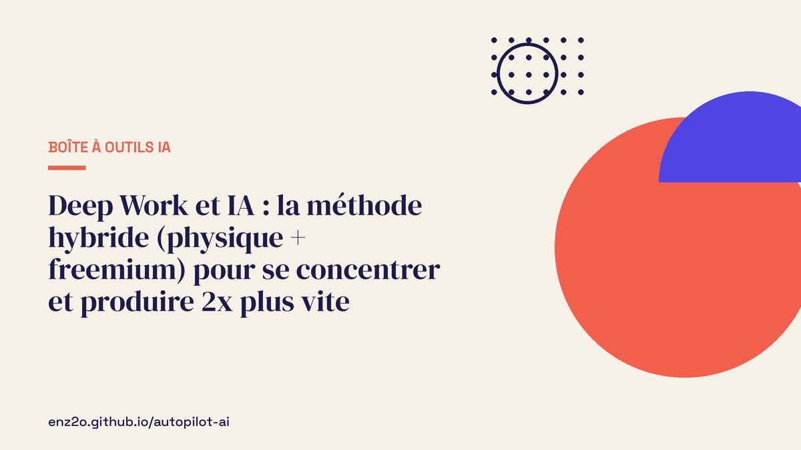

Deep Work et IA : la méthode hybride (physique + freemium) pour se concentrer et produire 2x plus vite
2026-11-23
Article contenant des liens affiliés.

Le paradoxe de la productivité moderne : plus d'outils, moins de concentration
En tant que freelance, étudiant ou créateur de contenu, vous avez accès aux outils les plus puissants de l'histoire de l'informatique. Les modèles de langage gratuits et les logiciels freemium promettent d'accomplir en dix minutes ce qui prenait autrefois une journée entière.
Pourtant, le constat quotidien est souvent opposé : la dispersion n'a jamais été aussi forte. Entre la recherche du prompt parfait, les notifications incessantes, les onglets ouverts par dizaines et le passage d'une application à l'autre, votre attention s'effrite. C'est ce qu'on appelle la fatigue décisionnelle et le coût de réalignement cognitif (le temps nécessaire à votre cerveau pour se re-concentrer après une interruption).
Pour surmonter cet obstacle sans dépenser des centaines d'euros en abonnements logiciels, la solution ne réside pas dans l'accumulation de nouvelles applications. Elle réside dans une approche hybride : associer un cadre physique strict avec un écosystème d'outils IA gratuits et de plateformes freemium bien calibrées.
Voici le guide pas à pas pour bâtir votre propre système de Deep Work (travail profond) assisté par l'IA.
Étape 1 : Le sanctuaire physique pour préserver l'attention initiale
Avant même d'ouvrir votre navigateur ou de solliciter une intelligence artificielle, votre environnement de travail physique doit protéger votre attention. Si votre bureau est encombré ou si votre écran déborde de fenêtres, votre cerveau interprète cela comme un bruit de fond permanent.
1. La capture papier systématique
Le piège classique consiste à utiliser son ordinateur pour prendre des notes volantes tout en travaillant. Dès que vous ouvrez un nouvel onglet pour noter une idée, vous risquez d'être distrait par vos e-mails ou les réseaux sociaux.
- La règle : Gardez toujours un carnet physique à côté de votre clavier. Dès qu'une idée parasite survient (une course à faire, un e-mail à envoyer, une idée de sujet), notez-la sur le papier et replongez immédiatement dans votre tâche en cours.
- La gestion du temps visuelle : Plutôt que de regarder l'heure sur votre ordinateur ou votre téléphone (vecteurs de distraction), utilisez un outil dédié à côté de votre écran. Un minuteur pomodoro visuel vous permet de visualiser le temps restant pour votre session de travail sans ouvrir le moindre menu numérique.
2. L'isolation phonique
Que vous travailliez en bibliothèque, dans un espace de coworking ou chez vous, le bruit ambiant découpe votre attention. Si votre budget est limité, investir dans un bon matériel d'isolation acoustique est souvent plus rentable qu'un abonnement logiciel mensuel. Un casque antibruit reduction bruit s'avère rapidement indispensable pour vous couper du monde extérieur et signaler à votre entourage que vous êtes en phase d'immersion.
Étape 2 : Le cadrage IA avant de lancer l'exécution
Une fois votre environnement physique prêt, l'IA intervient. Son rôle n'est pas de faire le travail à votre place pendant que vous regardez l'écran, mais de clarifier votre plan d'action pour éviter le syndrome de la page blanche.
La plupart des utilisateurs perdent du temps parce qu'ils demandent à l'IA de tout rédiger ou tout concevoir d'un coup. La méthode hybride privilégie le découpage préalable.
Le prompt de structuration de session
Avant de lancer une session de travail de 60 ou 90 minutes, soumettez votre objectif général à une IA gratuite (ChatGPT, Claude ou Gemini) avec la structure suivante :
« Je dispose de 90 minutes pour accomplir la tâche suivante : [ex: rédiger le guide d'accueil de mes clients freelances]. Découpe cette tâche en 4 sous-étapes chronologiques précises. Pour chaque étape, indique-moi la consigne exacte à suivre et ce que je dois produire. Reste synthétique et direct. »
En quelques secondes, l'IA agit comme un chef de projet. Vous n'avez plus à réfléchir à la manière d'attaquer le chantier : votre feuille de route est prête.
Étape 3 : L'exécution en mode immersion (Homme + IA)
Vous entrez maintenant dans la phase de production. L'objectif est d'alterner entre votre réflexion propre et l'assistance ponctuelle de l'IA.
La règle des 3 requêtes maximum par bloc
Pour éviter de passer votre session à « discuter » avec l'IA (une forme subtile de procrastination), fixez-vous une limite : 1. Requête 1 (Idéation / Plan) : Obtenir la structure du livrable. 2. Rédaction autonome : Vous rédigez ou concevez le cœur du contenu en vous appuyant sur votre expertise ou vos recherches. 3. Requête 2 (Relecture / Critique) : Vous collez votre brouillon dans l'IA pour lui demander de repérer les lourdeurs, les fautes ou les manques de clarté. 4. Requête 3 (Mise en forme) : Demandez une mise au propre (format Markdown, résumé synthétique, bullet points).
En procédant ainsi, vous gardez le contrôle créatif, vous préservez la touche humaine de votre travail, et vous gagnez un temps précieux sans consommer les quotas des versions gratuites d'outils IA.
Étape 4 : Centraliser et distribuer son travail à 0 €
Une fois votre livrable produit (qu'il s'agisse d'un article, d'un e-book, d'une présentation ou d'une offre de service), une nouvelle source de dispersion apparaît : la multiplication des outils d'hébergement et de diffusion.
Si vous devez utiliser un outil pour vos formulaires, un autre pour envoyer des e-mails, un troisième pour héberger des fichiers et un quatrième pour encaisser des paiements, vous passez plus de temps à maintenir votre stack technique qu'à produire de la valeur. De plus, les abonnements cumulés finissent par peser lourd dans le budget d'un indépendant ou d'un étudiant.
Pour éviter cet éparpillement, l'approche la plus efficace consiste à adopter une plateforme tout-en-un freemium. C'est exactement ce que propose Systeme.io, un outil francophone qui rassemble sur une seule interface gratuite vos pages de capture, vos tunnels de vente, l'envoi de vos newsletters et l'hébergement de vos formations ou documents numériques.
En centralisant ces fonctions au même endroit : * Vous évitez les connexions complexes par API ou Webhooks entre 5 logiciels différents. * Vous réduisez votre facture mensuelle à 0 € tant que vous débutez ou développez votre activité. * Vous gagnez du temps de cerveau disponible pour vous concentrer exclusivement sur la création de contenus et la relation avec vos clients.
Étape 5 : La routine de fermeture pour libérer l'esprit
Le travail profond ne s'arrête pas au moment où vous éteignez votre ordinateur. Pour éviter que le stress de vos projets ne déborde sur votre vie personnelle, mettez en place une routine de clôture quotidienne de 5 minutes.
- Vider le carnet papier : Reprenez les notes volantes prises pendant la journée. Traitez ce qui prend moins de 2 minutes, et planifiez le reste.
- Ranger son espace de travail : Laissez votre bureau physique propre. Un espace ordonné le soir garantit un démarrage sans friction le lendemain matin.
- Préparer la première tâche du lendemain : Écrivez sur une fiche cartonnez la SEULE priorité absolue de votre prochaine session. Au réveil, vous n'aurez pas à chercher par quoi commencer.
Si vous avez besoin de mettre en ligne une page ou de partager une ressource créée dans la journée, utilisez la simplicité de Systeme.io pour planifier sa diffusion en quelques clics avant de fermer votre session.
Synthèse du workflow hybride (Tableau récapitulatif)
| Phase | Outil conseillé | Rôle / Objectif |
|---|---|---|
| 1. Préparation physique | Carnet papier & minuteur pomodoro visuel | Éliminer le bruit numérique, fixer un cadre temporel strict. |
| 2. Cadrage & Planification | ChatGPT / Claude (Gratuit) | Découper le projet en sous-tâches opérationnelles. |
| 3. Immersion & Focus | casque antibruit reduction bruit | Travailler par blocs de 90 min sans distraction sonore. |
| 4. Mise en ligne & Vente | Systeme.io | Centraliser la capture d'emails, l'hébergement et la diffusion sans frais. |
| 5. Clôture | Fiche carton / Routine papier | Archiver les idées, vider l'esprit et préparer le lendemain. |
En combinant des limites physiques claires, l'agilité des IA gratuites et l'efficacité d'une plateforme freemium tout-en-un, vous construisez un système solide. Vous ne subissez plus la technologie : vous l'utilisez comme un levier pour produire plus, mieux, tout en protégeant votre énergie.